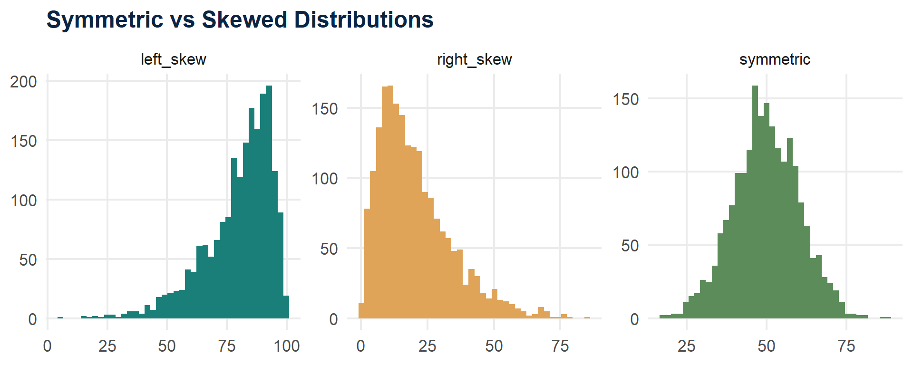
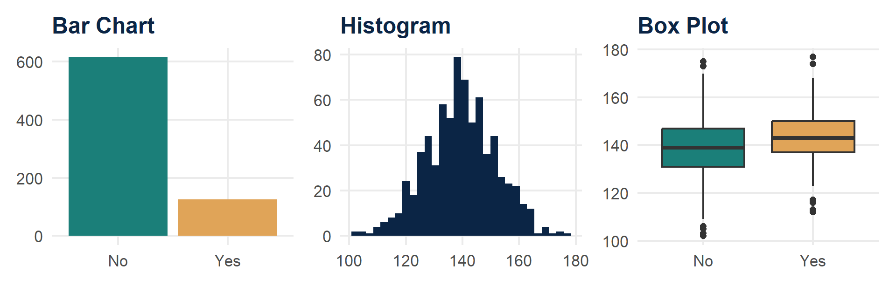
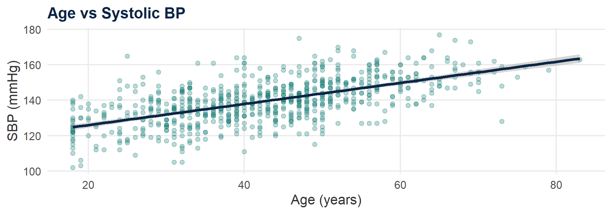
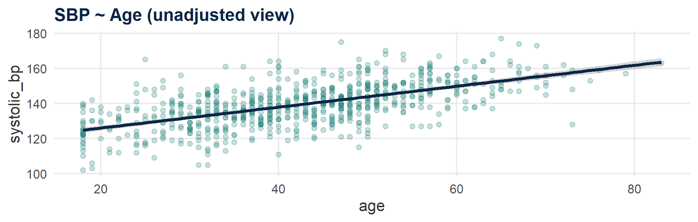
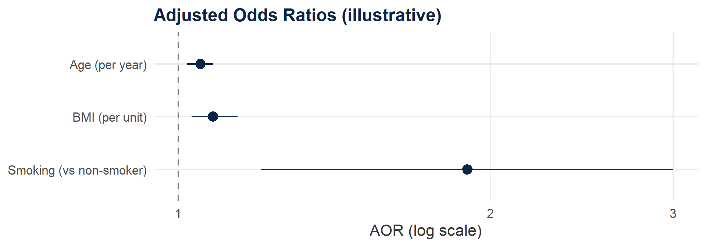

Code
flowchart LR A[Research<br>Question] --> B[Study<br>Design] B --> C[Variables] C --> D[Data<br>Quality] D --> E[Descriptive<br>Analysis] E --> F[Bivariate<br>Analysis] F --> G[Regression] G --> H[Interpretation<br>& Reporting]
From Research Question to Defensible Analysis — A Workshop for Part II Dissertation Candidates (NPMCN / WACP)
2026-09-25
742 rows.
You have completed data collection for your dissertation.
What happens next — and why does it matter more than which software you open?
120 minutes, 7 short modules — we move briskly
You will be asked to commit to an answer before we reveal it (chat / poll / reaction)
One running case study throughout: the Hypertension in Urban Communities Study
Goal is not to make you a statistician — it is to make you a defensible decision-maker
By the end of this workshop you will be able to:
POLL (Teams): How confident are you right now in choosing the correct statistical test for your dissertation objective?
flowchart LR A[Research<br>Question] --> B[Study<br>Design] B --> C[Variables] C --> D[Data<br>Quality] D --> E[Descriptive<br>Analysis] E --> F[Bivariate<br>Analysis] F --> G[Regression] G --> H[Interpretation<br>& Reporting]
🧭 Where are we? This banner returns at the start of every module.
Analysis begins with the research question and study design —
not with opening SPSS, Stata, or R.
flowchart TD S[Study Designs] --> O[Observational] S --> E[Experimental] O --> D1[Descriptive<br>Cross-sectional] O --> D2[Analytical] D2 --> CC[Case-control] D2 --> CO[Cohort] D2 --> CS[Analytical<br>Cross-sectional] E --> RCT[RCT /<br>Community Trial]
| Design | Typical Question | Direction of Inquiry | Key Output |
|---|---|---|---|
| Cross-sectional (descriptive) | How common is X? | Snapshot | Prevalence |
| Case-control | What’s associated with disease? | Outcome → exposure | Odds Ratio |
| Cohort | Does exposure predict outcome? | Exposure → outcome | Risk Ratio / Incidence |
| RCT / Community trial | Does intervention change outcome? | Allocated exposure → outcome | Risk difference / RR |
A resident recruits 300 hypertensive and 300 normotensive adults from a clinic and looks backward at their salt-intake history.
A. Cohort B. Case-control C. RCT D. Cross-sectional
Answer: B — Case-control. Outcome status (hypertensive vs not) is fixed at recruitment; exposure (salt intake) is measured retrospectively.
Your study design constrains which variables you can measure —
which constrains which statistics are valid.
Get this chain wrong, and no software will save you. Next: sample size and sampling.
\[n = \frac{Z^2 \, P(1-P)}{d^2}\]
| Symbol | Meaning |
|---|---|
| \(Z\) | Standard normal value for confidence level (1.96 for 95%) |
| \(P\) | Expected proportion (from prior literature/pilot) |
| \(d\) | Margin of error (precision) you will accept |
We are not deriving this — we are learning what each term forces you to justify.
Expected hypertension prevalence in an urban LGA = 30% (from prior study). You want 5% precision at 95% confidence.
[1] 323≈ 323 participants, before adjustments.
Finite population correction \[n_{adj} = \frac{n}{1 + (n-1)/N}\] Used when sampling frame (N) is small/known.
Non-response adjustment \[n_{final} = \frac{n}{1 - \text{(expected non-response \%)}}\]
Design effect (DEFF) \[n_{cluster} = n \times DEFF\] Applied when sampling is not simple random (e.g., cluster/multistage) — accounts for reduced precision from clustering.
For comparing two proportions or two means, sample size formulas add:
You will rarely hand-calculate these — but you must be able to defend every input you fed into G*Power/Stata/R.
flowchart TD P[Sampling Methods] --> Prob[Probability] P --> NonProb[Non-probability] Prob --> SRS[Simple Random] Prob --> Sys[Systematic] Prob --> Strat[Stratified] Prob --> Multi[Multistage / Cluster] NonProb --> Purp[Purposive] NonProb --> Snow[Snowball]
⚠️ Non-probability sampling limits generalizability — say so explicitly in your limitations.
A resident selects every 5th patient file from the clinic register after a random start point. This is:
A. Stratified B. Systematic C. Cluster D. Purposive
Answer: B — Systematic sampling. Fixed interval + random start.
The thing you are trying to explain or predict.
e.g., hypertension status, systolic BP
The thing you think influences the outcome.
e.g., smoking, age, BMI
Every dissertation objective should let you point at both.
| Type | Definition | Example |
|---|---|---|
| Continuous | Any value on a range | Age, BMI, SBP |
| Discrete | Countable whole numbers | Number of pregnancies |
| Categorical | Named groups | Sex, LGA, disease stage |
Variables can be converted from one form to another
flowchart LR N[Nominal<br>named, unordered] --> O[Ordinal<br>ordered, unequal gaps] O --> I[Interval<br>ordered, equal gaps,<br>no true zero] I --> R[Ratio<br>ordered, equal gaps,<br>true zero]
| Scale | Key idea | Public-health examples |
|---|---|---|
| Nominal | Categories with no inherent order | Hypertension status (yes/no); vaccination status (vaccinated/unvaccinated); blood group (A/B/AB/O); LGA of residence; marital status; disease diagnosis; type of health facility |
| Ordinal | Categories have a meaningful order, but gaps are not necessarily equal | Cancer stage (I–IV); disease severity (mild/moderate/severe); educational attainment; socioeconomic class; Likert response (strongly disagree → strongly agree); nutritional status categories |
| Interval | Equal intervals, but zero is arbitrary | Temperature in °C; calendar year; date of diagnosis/date of birth |
| Ratio | Equal intervals and a meaningful true zero | Age; weight; height; systolic BP; CD4 count; monthly income; duration of illness; number of clinic visits |
Data is collected into a form of spreadsheet with rows and variables
Rows: horizontal (represents all measurements from a single unique observation)
Columns: vertical (a single attribute measured across all observations)
📌 The Golden Rule of Tidy Data
To keep data “tidy” and ready for analysis, every dataset must follow this strict structure:
Each variable must have its own column.
Each observation must have its own row.
Each value (individual cell) must contain a single measurement.
1. Which of the followings is not a categorical variable?
Place of delivery
Occupation
Salary
Ethnicity
2. Which of the followings is a continuous variable?
Heart rate
Eye Colour
CGPA
3. Which of the variable(s) below does not follow the “tidy data” principle?
Blood Pressure
BMI
Heart rate
Variable Type → Summary Measure → Visualization → Statistical Test
Get the variable type wrong, and every downstream choice — the table you build, the graph you draw, the test you run — is built on sand.
hypertension (Yes/No) should be summarized as:
A. Mean ± SD B. Frequency & percentage C. Median (IQR)
Answer: B. Categorical variables are summarized with counts/percentages, never means.
Digital
Paper-based
Digital tools reduce (but do not eliminate) data-entry error — validation rules must still be built in deliberately.
flowchart LR Raw[Raw Data] --> Val[Validation] Val --> Clean[Cleaning] Clean --> Recode[Recoding /<br>Derived Variables] Recode --> Ready[Analysis-Ready<br>Dataset]
Data cleaning is analysis — not an administrative chore before “the real work.”
| id | age | sex | sbp | dob | hypertension |
|---|---|---|---|---|---|
| 001 | 34 | M | 128 | 1990-04-12 | No |
| 002 | 250 | F | 118 | 1985-01-30 | Yes |
| 003 | 45 | 1 | -20 | 2031-06-01 | Yes |
| 001 | 34 | M | 128 | 1990-04-12 | No |
Errors: 1. implausible age (250)
mixed sex coding (M/F vs 1/2)
negative SBP
future/impossible date
duplicate ID 001
Anonymity. Confidentiality. Secure storage.
Every dataset in this workshop is simulated — none of these 742 “participants” exist.
Measures of Central Tendency
Measures of Dispersion
set.seed(1)
df_shapes <- tibble(
symmetric = rnorm(2000, 50, 10),
right_skew = rgamma(2000, shape = 2, scale = 10),
left_skew = 100 - rgamma(2000, shape = 2, scale = 10)
) |> pivot_longer(everything(), names_to = "shape", values_to = "value")
ggplot(df_shapes, aes(value, fill = shape)) +
geom_histogram(bins = 40, show.legend = FALSE) +
facet_wrap(~shape, scales = "free") +
scale_fill_manual(values = c(pal$teal, pal$amber, pal$green)) +
theme_workshop() +
labs(title = "Symmetric vs Skewed Distributions", x = NULL, y = NULL)
Generally, there are tests to check for skewness (Normality tests)
Quick “Eyeball” methods include:
Histogram
Boxplot
Q-Q plot
Rule of thumb: skewed data → report median (IQR), not mean ± SD.
| mean_sbp | sd_sbp | median_sbp | q1 | q3 |
|---|---|---|---|---|
| 139.4 | 12.3 | 139.0 | 131.0 | 147.8 |
Mean and median are close here → SBP is approximately symmetric → mean ± SD is defensible.
Categorical Bar chart
Continuous (shape) Histogram
Continuous (comparison) Box plot
library(patchwork)
p1 <- ggplot(hypertension_demo, aes(hypertension, fill = hypertension)) +
geom_bar() + scale_fill_manual(values = c(pal$teal, pal$amber)) +
theme_workshop() + theme(legend.position = "none") + labs(title = "Bar Chart", x=NULL,y=NULL)
p2 <- ggplot(hypertension_demo, aes(systolic_bp)) +
geom_histogram(bins = 30, fill = pal$navy) +
theme_workshop() + labs(title = "Histogram", x=NULL,y=NULL)
p3 <- ggplot(hypertension_demo, aes(hypertension, systolic_bp, fill = hypertension)) +
geom_boxplot(show.legend = FALSE) + scale_fill_manual(values = c(pal$teal, pal$amber)) +
theme_workshop() + labs(title = "Box Plot", x=NULL,y=NULL)
p1 | p2 | p3
https://stbalo2002.shinyapps.io/Intro_to_biostatistics
You want to show the relationship between age and systolic BP (both continuous). Best graph?
A. Bar chart B. Box plot C. Scatterplot D. Pie chart
Answer: C — Scatterplot. Two continuous variables → scatterplot (sets up Module 6’s regression line).
We never measure the population.
We measure a sample — and use it to make a careful, uncertain statement about the population.
❌ “The probability the null hypothesis is true.”
✅ The p-value quantifies how incompatible the observed data are with the null model, under the assumptions of the test.
In plain terms: “If there really were no effect, how surprising would data like ours be?”
| H0 True | H0 False | |
|---|---|---|
| Reject H0 | Type I error (α) | Correct decision |
| Fail to reject H0 | Correct decision | Type II error (β) |
Power = 1 − β → probability of detecting a real effect when one exists. This is why Module 2’s sample size mattered.
Memorize this sequence, not a giant table of tests.
flowchart TD
Obj[Objective] --> Desc[Describe]
Obj --> Comp[Compare]
Obj --> Assoc[Associate]
Obj --> Pred[Predict]
Comp --> OutType{Outcome type?}
OutType -->|Categorical| Cat[Chi-square /<br>Fisher's exact]
OutType -->|Continuous| Groups{How many<br>groups?}
Groups -->|2, independent| T1[t-test /<br>Mann-Whitney U]
Groups -->|2, paired| T2[Paired t-test /<br>Wilcoxon signed-rank]
Groups -->|3+| T3[ANOVA /<br>Kruskal-Wallis]
Assoc --> Corr[Pearson /<br>Spearman correlation]
Pred --> Reg[Linear /<br>Logistic regression]flowchart TD
Obj[Objective] --> Desc[Describe]
Obj --> Comp[Compare]
Obj --> Assoc[Associate]
Obj --> Pred[Predict]
Comp --> OutType{Outcome type?}
OutType -->|Categorical| Cat[Chi-square /<br>Fisher's exact]
OutType -->|Continuous| Groups{How many<br>groups?}
Groups -->|2, independent| T1[t-test /<br>Mann-Whitney U]
Groups -->|2, paired| T2[Paired t-test /<br>Wilcoxon signed-rank]
Groups -->|3+| T3[ANOVA /<br>Kruskal-Wallis]
Assoc --> Corr[Pearson /<br>Spearman correlation]
Pred --> Reg[Linear /<br>Logistic regression]
⚠️ A decision tree is a starting aid — not a substitute for understanding your design, assumptions, and question.
| Question | Is there an association between two categorical variables? |
| Variables | Categorical outcome & categorical exposure |
| Assumption | Expected cell counts ≥5 (else use Fisher’s exact) |
| PH Example | Hypertension (Y/N) vs Smoking (Y/N) |
| Report as | χ²(df) = value, p = value, or OR with 95% CI |
A researcher compares mean SBP between smokers and non-smokers. SBP is approximately normal; groups are independent.
A. Chi-square B. Independent t-test C. Paired t-test D. Spearman correlation
Answer: B — Independent t-test. Continuous outcome, two independent groups, approximately normal.
| Pearson | Linear association between two continuous, roughly normal variables |
| Spearman | Monotonic association; ordinal data or non-normal continuous data |
| PH Example | Age vs systolic BP |
| Reminder | Correlation ≠ causation; check linearity visually first |

Compare hypertension prevalence between smokers vs non-smokers.
A. Independent t-test B. Chi-square test C. Pearson correlation D. Linear regression
Answer: B. Two categorical variables → chi-square (or Fisher’s exact if any expected cell < 5).
Crude analysis: smokers have much higher SBP than non-smokers. But smokers in this sample are also, on average, older.
Is the SBP difference really about smoking — or partly about age?
Regression lets us ask: “What is the effect of smoking, holding age constant?”
What variable type is your outcome variable of interest?
Continuous -> Linear regression
Dichotomous/Categorical -> Logistic regression
** How many variables are present?
| Type of Analysis | Number of Dependent Variables (Y) (The Outcome/Goal) | Number of Independent Variables (X) (The Inputs/Predictors) | Simple Real-World Example |
|---|---|---|---|
| Bivariate | 1 | 1 | You want to see if daily sodium intake (X) can predict a patient’s blood pressure (Y) |
| Multivariate | 1 (usually) | 2 or more | You want to see how sodium intake (X1), age (X2), and weight (X3) collectively predict a patient’s blood pressure (Y) |
flowchart LR
Biv[Bivariate<br>Association] --> Conf{Potential<br>Confounding?}
Conf -->|Yes| Multi[Multivariable<br>Analysis]
Conf -->|No| Report[Report Crude<br>Estimate]
Example: SBP predicted by age and BMI
Estimate Std. Error t value Pr(>|t|)
(Intercept) 102.776 2.368 43.398 0
age 0.599 0.028 21.412 0
bmi 0.436 0.078 5.601 0Each β = expected change in SBP per 1-unit increase, holding the other variable constant.
| Term | Meaning |
|---|---|
| β (coefficient) | Direction & magnitude of association |
| 95% CI | Plausible range for the true β |
| p-value | Compatibility with β = 0 |
| R² | Proportion of outcome variance explained (conceptually) |

Example: Hypertension (Yes/No) predicted by age, BMI, smoking
AOR = 2.1 (95% CI: 1.3–3.4)
forest_df <- tibble(
variable = c("Age (per year)", "BMI (per unit)", "Smoking (vs non-smoker)"),
OR = c(1.05, 1.08, 1.9),
lower = c(1.02, 1.03, 1.2),
upper = c(1.08, 1.14, 3.0)
)
ggplot(forest_df, aes(x = OR, y = fct_rev(variable))) +
geom_vline(xintercept = 1, linetype = "dashed", color = "grey50") +
geom_pointrange(aes(xmin = lower, xmax = upper), color = pal$navy, size = 0.8) +
scale_x_log10() +
theme_workshop() +
labs(title = "Adjusted Odds Ratios (illustrative)", x = "AOR (log scale)", y = NULL)
Regression adjusts estimates.
It does not rescue a poorly designed study.
| Variable | p-value |
|---|---|
| Age | 0.041237 |
| Smoking (n = 61/300, n = 45/442) | 0.002891029 |
Problems: only p-values (no estimates/CIs), excessive decimal places, inconsistent denominators for smoking (300 vs 442 — missing data unexplained).
POLL: How confident are you now in choosing the correct statistical test for your dissertation objective?
Questions?
Take-home cheat sheet, analysis plan template, and this dataset (simulated) are available in the workshop folder.
Introduction to Research Data Analysis | NPMCN/WACP Part II Prep